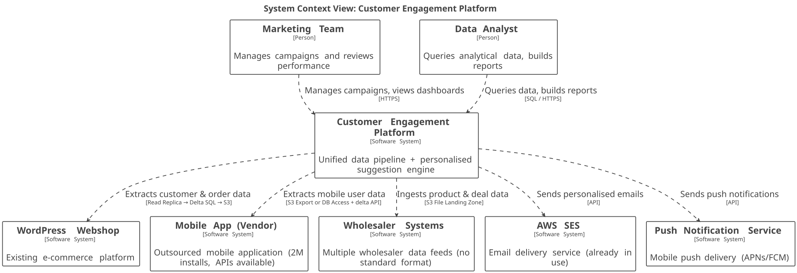
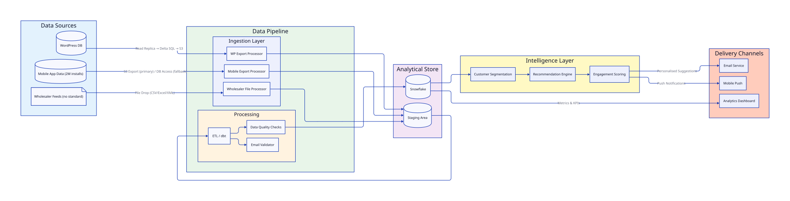
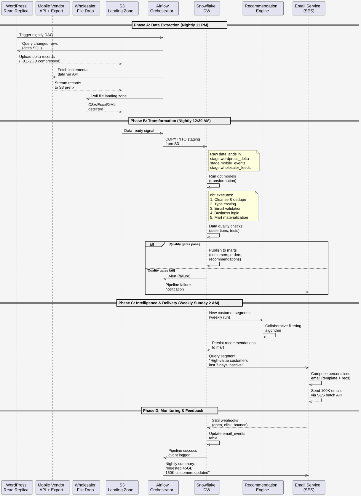

1. Glossary
| Term | Definition |
|---|---|
Airflow |
Apache Airflow — open-source workflow orchestration platform for scheduling and monitoring data pipelines |
APNs/FCM |
Apple Push Notification service / Firebase Cloud Messaging — mobile push notification delivery services for iOS and Android |
CAPEX |
Capital Expenditure — one-time development and setup costs |
DAG |
Directed Acyclic Graph — the unit of work in Airflow; defines the sequence and dependencies of pipeline tasks |
dbt |
Data Build Tool — SQL-first transformation framework for analytics engineering |
ETL |
Extract, Transform, Load — pattern for moving data from source systems into an analytical store |
GDPR |
General Data Protection Regulation — EU data privacy regulation requiring explicit consent for personal data use |
KPI |
Key Performance Indicator — measurable value showing how effectively business objectives are being achieved |
MoSCoW |
Prioritisation framework: Must have, Should have, Could have, Won’t have |
MWAA |
Amazon Managed Workflows for Apache Airflow — fully managed Airflow service on AWS; removes operational burden of self-hosting |
OLAP |
Online Analytical Processing — database optimised for queries and analysis (e.g. Snowflake) |
OLTP |
Online Transactional Processing — database optimised for day-to-day transactions (e.g. WordPress MySQL) |
OPEX |
Operational Expenditure — ongoing monthly costs (infrastructure, licences, tooling) |
SES |
Simple Email Service — AWS managed email sending service |
Snowflake |
Cloud-based OLAP data warehouse — managed service on AWS, SQL-first, scales compute independently of storage |
TCO |
Total Cost of Ownership — full cost including development, infrastructure, and team over a given period |
VPN |
Virtual Private Network — encrypted tunnel between on-premises infrastructure and cloud |
2. Executive Summary
2.1. Context
Your organisation is an established European grocery and commodity webshop — 15 years on the market, ~1M daily visitors, 2M mobile app installs. The goal is to increase annual turnover by 20%. Today, customer data is scattered across isolated systems: the WordPress e-commerce platform, the mobile application, and wholesaler product feeds each operate independently, with no unified view of purchasing behaviour.
This document proposes a unified data pipeline that consolidates customer, product, and wholesaler data into a single analytical layer — and uses it to deliver personalised product suggestions via email and mobile push notifications. The platform is designed to be owned and operated by your existing team, without requiring a dedicated data function.
2.2. Recommendation at a Glance
| Aspect | Summary |
|---|---|
Recommended Option |
Option 2 — Snowflake Data Platform with Managed ETL |
Estimated CAPEX |
~$493K (within confirmed budget; incl. 20% risk buffer) |
Estimated OPEX |
$6K–$16K/month (Snowflake + AWS SES + MWAA + infrastructure) |
Timeline |
7 months (phased delivery) |
Team Size |
5 engineers: 2 Data Engineers + 1 Backend + 1 ML/Data Scientist + 1 QA + 0.5 SA |
Go-Live Target |
April 2027 (next fiscal year), with proved results before 2028 |
2.3. Scope Boundary
This engagement delivers: unified data pipeline (WordPress, mobile app, wholesalers), Snowflake analytical platform, customer segmentation and recommendation engine, email campaign delivery via AWS SES, mobile push notifications, and a self-service analytics dashboard.
This engagement explicitly does not include: WordPress migration or re-platforming, new feature development for the mobile application, EDI or real-time API integration with wholesalers, real-time personalisation, or recruitment of a permanent data team. Any change to this scope is subject to a formal change request and re-estimation.
3. Problem Statement
3.1. Current Pain Points
| # | Problem | Business Impact |
|---|---|---|
1 |
Customer data scattered across isolated systems (WordPress DB, mobile app, wholesaler feeds) — no unified view |
Cannot identify cross-channel buying patterns; personalisation impossible |
2 |
No mechanism to proactively suggest products to existing customers |
~1M daily visitors but no re-engagement; revenue limited to organic visits |
3 |
Mobile app data accessible via vendor APIs, but 2M installs = primary channel data missing from analytics |
Mobile customer behaviour invisible; cannot target 2M app users with personalised offers |
4 |
15 years of accumulated customer emails — many stale or invalid (10-minute mailboxes) |
Email marketing ROI degraded by poor deliverability |
5 |
Internal team lacks data engineering expertise to build analytics capabilities |
Data-driven decisions delayed; business relies on intuition over evidence |
3.2. Target State
The enterprise has a unified data platform that continuously consolidates customer, product, and wholesaler data from all sources into a single analytical store. A personalised suggestion engine analyses buying patterns and matches customers with relevant products and deals, delivering timely recommendations via email and mobile push. The marketing team monitors campaign performance through self-service dashboards, and the platform is designed for the internal team to gradually take ownership with minimal external dependency.
3.3. Business Goal Translation
Your stated goal is "increase turnover by 20%." A target of this scale will require multiple growth levers working together — personalised recommendations are the single largest lever available without acquiring new customers, but they are one component. Industry benchmarks for grocery e-commerce personalisation show 5–15% basket size uplift at full platform maturity. This platform delivers the foundational data infrastructure that makes every subsequent growth initiative (cross-sell campaigns, lapsed-customer reactivation, data-driven merchandising) measurable and scalable.
In technical terms, this engagement delivers:
-
Unify all customer data islands into a single source of truth
-
Profile customers based on purchase history, browsing behaviour, and preferences
-
Recommend products with the highest conversion probability per customer segment
-
Deliver recommendations through email (AWS SES) and mobile push (2M installs)
-
Measure uplift via campaign tracking and A/B testing in the analytics dashboard
The 20% target is achievable by combining personalisation uplift with additional initiatives — lapsed-customer reactivation, expanded channel coverage (mobile push to 2M users), and data-informed assortment decisions — all enabled by this platform but iterated upon post-launch.
4. Solution Options
4.1. Side-by-Side Comparison
| Aspect | Option 1: Quick Win | Option 2: Snowflake Platform ✅ | Option 3: Databricks Full AI |
|---|---|---|---|
Scope |
WordPress data only + basic email suggestions via SQL segmentation |
All data sources + Snowflake + ML-based suggestions + email & mobile |
All sources + Databricks + custom AI model training + real-time streaming |
Data Sources |
WordPress DB only |
WordPress + Mobile (API) + Wholesalers |
All sources + real-time event streams |
AI Capability |
Rule-based (SQL queries) |
ML-based segmentation (Snowflake ML or external) |
Custom-trained recommendation models (Databricks MLflow) |
Team |
2 devs (1 Data Eng + 1 Backend) |
5 devs (2 Data Eng + 1 Backend + 1 ML + 1 QA) |
8+ devs (3 Data Eng + 2 ML + 1 Backend + 1 DevOps + 1 QA) |
Timeline |
3 months |
7 months (phased) |
12+ months |
CAPEX (incl. risk buffer) |
$80K–$150K |
~$500K (within budget) |
$800K–$1.5M |
OPEX / month |
$2K–$5K |
$6K–$16K |
$25K–$50K |
Risk |
Low (limited scope, fast delivery) |
Medium (vendor negotiation, data quality) |
High (complexity, team skill gap, long timeline) |
5. Recommended Option: Snowflake Data Platform with Managed ETL
5.1. System Context

5.2. High-Level Architecture

5.3. Data Workflow — Nightly Pipeline Execution

5.4. What It Delivers
-
Unified analytical data store (Snowflake) consolidating WordPress, mobile, and wholesaler data
-
Automated ETL pipeline with data quality validation and email address verification
-
ML-based customer segmentation and personalised product recommendation engine
-
Personalised email campaign delivery via AWS SES (already in use)
-
Mobile push notification capability (Phase 2 — 2M installs makes this a primary channel)
-
Self-service analytics dashboard for marketing team (campaign performance, KPIs)
-
GDPR-compliant data processing with consent management and customer deletion support
6. Functional Requirements
| # | Priority (MoSCoW) | Requirement | Phase |
|---|---|---|---|
Epic 1 — Data Ingestion |
|||
FR-01 |
Must |
Extract customer and order data from WordPress MySQL DB via read-only SQL connection over VPN |
1 |
FR-02 |
Must |
Ingest mobile app customer data via vendor-managed S3 export (preferred) or direct read-only DB access (fallback); API for incremental delta sync only |
3 |
FR-03 |
Should |
Process wholesaler data files from S3 landing zone (CSV, Excel, XML — no fixed schema) |
3 |
Epic 2 — Data Quality & Processing |
|||
FR-04 |
Must |
Validate and deduplicate customer email addresses; flag known disposable/invalid emails |
1 |
FR-05 |
Must |
Apply dbt transformation models: staging → intermediate → mart layers |
1 |
FR-06 |
Should |
Monitor pipeline health: row counts, null rates, schema drift alerts |
1 |
Epic 3 — Customer Segmentation & Recommendations |
|||
FR-07 |
Must |
Build unified customer profiles from available sources (WordPress in Phase 2; extended with mobile and wholesaler data in Phase 3) |
2 |
FR-08 |
Must |
Generate personalised product recommendations per customer based on purchase history |
2 |
FR-09 |
Should |
Segment customers into cohorts (e.g. high-value, lapsed, seasonal) |
2 |
Epic 4 — Email Channel |
|||
FR-10 |
Must |
Compose and dispatch personalised recommendation emails via AWS SES |
2 |
FR-11 |
Must |
Track email delivery, open, and click events; store results in Snowflake |
2 |
FR-12 |
Should |
Support configurable send frequency (default: weekly) |
2 |
Epic 5 — Mobile Push Notifications |
|||
FR-13 |
Should |
Send personalised push notifications via APNs/FCM to mobile app users |
3 |
FR-14 |
Could |
Support event-triggered push (e.g. abandoned cart, price drop) |
3 |
Epic 6 — Analytics Dashboard |
|||
FR-15 |
Must |
Provide marketing team with campaign performance dashboard (open rate, click rate, conversions) |
2 |
FR-16 |
Should |
Provide data quality monitoring dashboard (pipeline status, email validity rates) |
2 |
Epic 7 — GDPR & Consent |
|||
FR-17 |
Must |
Respect GDPR consent flag — only process and contact customers with confirmed consent |
1 |
FR-18 |
Must |
Support customer data deletion (right to erasure) — anonymise records in Snowflake |
1 |
FR-19 |
Should |
Apply data retention policies: orders 7 years, recommendations 2 years |
1 |
7. Non-Functional Requirements
| Quality Attribute | Requirement | Target |
|---|---|---|
Performance |
WordPress ingestion pipeline completes daily batch within scheduled window |
≤ 4 hours end-to-end |
Recommendation Freshness |
Customer profiles and recommendations refreshed regularly |
Weekly (daily in Phase 3) |
Scalability |
Platform handles current customer base and grows without re-architecture |
1M customers now; 3M by 2029 |
Email Deliverability |
Email bounce rate kept low to protect AWS SES sender reputation |
< 2% hard bounce rate |
Pipeline Reliability |
Core ingestion and transformation jobs succeed without manual intervention |
99.5% successful runs per month |
Security |
Data encrypted at rest and in transit; on-prem access via VPN only |
AES-256 at rest, TLS 1.2+ in transit |
GDPR Compliance |
All processing respects consent flags; deletion requests actioned within regulatory deadline |
72-hour deletion SLA (GDPR Art. 17) |
Operability |
Platform operable by non-data-engineers after handover; no 24/7 on-call required. Airflow DAG failures trigger email/Slack alerts within 5 minutes. CloudWatch alarms active for ECS task errors and SES bounce rate spikes. Snowflake Query History used for cost and query performance monitoring. Structured pipeline logs include |
Self-service dashboard; alerting via email/Slack; CloudWatch + Airflow UI |
7.1. Testing Approach
-
Pipeline tests (dbt): Row count assertions, null checks, referential integrity, and schema drift detection on every dbt model — run automatically on every DAG execution.
-
Data quality gates: Phase 1 email validation establishes a quality baseline. Recommendation runs are gated on minimum thresholds (e.g. ≥60% of customer profiles have a valid email before the first campaign is dispatched).
-
Integration testing: Each data source connection (WordPress export, mobile vendor, wholesaler files) verified end-to-end before the pipeline is marked complete in Phase 1.
-
Email deliverability testing: Test campaign (100–200 seed addresses) run before each production send. Bounce rate must be < 2% on the test batch before full dispatch.
-
UAT: End-to-end flow (data in → recommendations generated → email dispatched → event tracked back to Snowflake) tested with a real customer segment in Phase 3 before go-live.
-
Performance: Snowflake query time and nightly pipeline completion time monitored against NFR targets (≤4h end-to-end) throughout Phase 2 and Phase 3.
8. Cost Breakdown
8.1. Development Investment (CAPEX)
| Role / Item | Count | Rate | Duration | Deliverable | Cost |
|---|---|---|---|---|---|
Data Engineer |
2 |
$15K/mo |
6 months |
ETL pipeline, ingestion connectors, Snowflake setup, dbt models |
$180K |
Backend Developer |
1 |
$12K/mo |
5 months |
Suggestion engine, email integration, API layer, dashboard backend |
$60K |
ML / Data Scientist |
1 |
$15K/mo |
4 months |
Customer segmentation models, recommendation algorithm |
$60K |
QA Engineer |
1 |
$8K/mo |
4 months |
Pipeline testing, data quality validation, E2E email testing |
$32K |
Solution Architect |
0.5 |
$18K/mo |
6 months |
Architecture, vendor coordination, knowledge transfer |
$54K |
Cloud Setup & CI/CD |
— |
— |
— |
Snowflake account, AWS infra, Terraform, environments |
$15K |
Training & Knowledge Transfer |
— |
— |
— |
Direct costs: materials, external workshops. Structured 3-month capability building programme delivered within Phase 3 team allocation — see Post-Launch Plan. |
$10K |
Subtotal |
$411K |
||||
Contingency (20%) |
— |
— |
— |
Mobile vendor delays, data quality unknowns, integration surprises |
$82K |
TOTAL CAPEX |
~$493K (within budget) |
8.2. Cost Estimation Methodology
-
Rate × time = cost. Each line item reflects a market rate for the role multiplied by the months allocated. Rates reflect EU consulting market for specialist data engineering, ML, and architecture skills.
-
Phases overlap. The 7-month total is shorter than the sum of individual phase durations because Phase 2 begins before Phase 1 completes.
-
20% contingency is applied — the recommended minimum for data projects with significant unknowns. Achieved by trimming QA to 4 months (Phase 2 full + Phase 3 partial) and SA to 6 months (drops off in the final UAT month once architecture decisions are settled). Covers mobile vendor negotiation delays, WordPress schema complexity, and wholesaler format variability.
-
Infrastructure lump sum ($15K) covers Snowflake account setup, AWS environments (dev/staging/prod), Terraform provisioning, and CI/CD pipeline.
8.3. Per-Phase Cost
| Phase | Duration | Team | Estimated Cost |
|---|---|---|---|
Phase 1: Foundation & WordPress Pipeline |
10 weeks |
2 Data Eng + 0.5 SA + 0.25 QA |
~$110K |
Phase 2: Suggestion Engine & Email Channel |
10 weeks (2-week schedule buffer absorbed within contingency) |
1 Data Eng + 1 Backend + 1 ML + 1 QA + 0.5 SA |
~$145K |
Phase 3: Mobile & Wholesaler Expansion |
10 weeks |
1 Data Eng + 1 Backend + 0.5 QA (wk 21–26) |
~$74K |
Cloud Setup + Training |
Throughout |
— |
$25K |
Contingency (20%) |
— |
— |
$82K |
TOTAL |
~7 months |
~$493K (within $500K budget) |
8.4. Operational Costs (OPEX)
| Service | Specification | Monthly Cost |
|---|---|---|
Snowflake (Data Platform) |
Standard tier, EU region, XS→S warehouse. Initial months: $500–$2K; scales to $3K–$8K as data and query volumes grow. |
$3K–$8K |
AWS Infrastructure |
ECS (ETL compute), S3 (staging), VPN, networking |
$1K–$3K |
AWS SES (Email) |
Already in use; ~1M emails/week |
$100–$500 |
Monitoring / Alerting |
CloudWatch + Airflow native UI |
$500–$1K |
AWS MWAA (Managed Airflow) |
Managed orchestration service; avoids self-managing Airflow on ECS |
$300–$1,500 |
Contingency (15%) |
Spike compute, data growth, extra environments |
$700–$2K |
TOTAL OPEX |
$6K–$16K/month |
Year 1 OPEX: ~$67K–$192K 3-Year TCO: ~$695K–$1.07M (CAPEX ~$493K + 3 years OPEX at $6K–$16K/month)
8.5. Revenue & ROI Projection
| These projections cover basket size uplift from personalised recommendations — the most direct and measurable revenue impact of this platform. Additional uplift from reduced churn, improved email engagement, and data-informed merchandising is expected but not projected here, as it depends on how actively the marketing team uses the platform beyond automated recommendations. Industry benchmarks for grocery e-commerce recommendation uplift: 5–15% basket size increase at full platform maturity (typically 12–18 months of operation), per McKinsey and Salesforce State of Commerce. All projections are directional and should be validated against actual campaign data in Phase 2. |
| Scenario | Assumption | Est. Monthly Revenue Uplift | Realistic Timeframe |
|---|---|---|---|
First campaign (Phase 2, month 5) |
Partial audience — validated emails + GDPR consent + sufficient order history; model in learning phase |
+$15K–$50K/month (est. 1–2% uplift) |
Month 5–6 post-kickoff |
Conservative maturity (5% basket uplift) |
~1M daily visitors × ~2% conversion = ~20K purchasers/day × avg basket $15 → $15.75 (+$0.75/order) |
+$15K/day → +$450K/month |
12–18 months post-kickoff |
Optimistic maturity (15% basket uplift) |
~1M daily visitors × ~2% conversion = ~20K purchasers/day × avg basket $15 → $17.25 (+$2.25/order) |
+$45K/day → +$1.35M/month |
24–36 months post-kickoff |
At the conservative maturity scenario (5% uplift, ~12–18 months post-kickoff), the +$450K/month uplift recovers the full ~$493K CAPEX within approximately two months of reaching that level. Both the $15 average basket and 2% conversion rate are illustrative; actual projections should be calibrated against current trading data in Phase 1.
These projections represent basket uplift from personalisation alone. Reaching the full 20% turnover target requires combining this uplift with additional initiatives that the platform enables — lapsed-customer reactivation campaigns, data-driven assortment optimisation, and expanded mobile push coverage (2M app users). The unified data layer delivered here is the prerequisite for all of these levers.
9. Storage Sizing
|
Why 10–30% of the 900GB WordPress database? A 15-year-old WordPress DB contains plugin data, cache, revisions, and logs we don’t need. We extract only customer, order, and product tables (~10–30%). Phase 1 Week 1 includes a schema audit to refine this estimate. |
| Source | Raw Size | Compressed (S3) | Notes |
|---|---|---|---|
WordPress analytical tables |
90–270GB (10–30% of 900GB) |
Nightly delta: ~0.1–2GB compressed. Weekly full: ~9–54GB compressed. |
7-day S3 retention: ~10–80GB total. Snowflake columnar storage: ~20–90GB. |
Mobile app data |
~1–10GB per weekly export |
~0.5–3GB compressed |
Volume unconfirmed — depends on vendor export scope (profiles only vs. full event history). To be clarified in Phase 1. |
Wholesaler feeds |
~10–100MB per supplier per refresh |
Negligible |
Assumed 5–15 suppliers (unconfirmed). Even at 15 suppliers: <1.5GB total uncompressed. |
Email events (SES webhooks) |
~50MB/week at 1M emails |
Negligible |
Grows with campaign frequency; remains small relative to other sources. |
Total (S3 landing zone) |
~10–60GB/week ingested (weekly full refresh); nightly delta ~0.1–2GB/run |
Storage is not a cost driver. Comfortably absorbed within the AWS Infrastructure OPEX line ($1K–$3K/month). |
10. Scalability Analysis
10.1. Current Platform Capacity
The platform is designed to handle the current customer base (1M active users) and support growth to 3M customers by end of 2029 without re-architecture:
| Dimension | Current (2027 Go-Live) | Stretch Target (2029) | Limiting Factor |
|---|---|---|---|
Customer Records |
~1M |
~3M (3x growth) |
Snowflake query time; recommendation engine runtime |
Daily Data Ingestion |
~10–60GB/week |
~30–180GB/week (3x growth) |
Airflow MWAA task slots; Snowflake compute |
Daily Website Visitors |
~1M |
~3M (3x growth) |
WordPress read replica disk/network bandwidth |
Concurrent Email Recipients |
~100K/week average |
~300K/week average (3x growth) |
AWS SES send rate (14 emails/sec = ~1.2M/day; account limit is 50 emails/sec by default) |
Snowflake Storage |
~80–100GB (analytical data at rest) |
~240–300GB (3x growth) |
S3 retention + Snowflake columnar compression; not a cost driver |
10.2. Component Scaling Characteristics
| Component | Current (1M Customers) | At 3M Customers | Action Required |
|---|---|---|---|
Snowflake |
Small warehouse (2 credits/sec); ~80GB data |
Medium/Large warehouse; ~240GB data |
Upgrade warehouse size (+$1K–$2K/month) |
Airflow MWAA |
128 task slots; ~10–15 concurrent tasks; 1–2h pipeline runtime |
256+ task slots; ~2–3h pipeline runtime |
Increase task slot allocation (+$200–$400/month) |
AWS SES |
50 emails/sec limit; ~100K/week volume |
Request 100 emails/sec limit; ~300K/week volume |
Request quota increase (no cost impact) |
WordPress Replica |
~900GB disk space; <1s replication lag |
~2.7TB disk space; <1s replication lag |
Plan disk expansion; not a blocker if scheduled in advance |
Email Event Tracking |
~50MB/week volume |
~150MB/week volume |
No action required (negligible impact) |
10.3. Growth Scenarios & Timeline
| Milestone | Timeline | Expected Customer Records | Projected OPEX Impact |
|---|---|---|---|
Go-Live |
Q2 2027 |
~1M |
$6K–$16K/month (baseline) |
Mid-Life Assessment |
Q4 2027 |
~1.3M (incremental growth) |
No changes to OPEX |
First Upgrade Trigger |
Q2 2028 |
~1.8M |
Snowflake warehouse upgrade to Large ($1K–$2K/month); Airflow task slots upgrade ($200–$400/month) |
Pre-3M Cutover |
Q4 2028 |
~2.5M |
AWS SES limit increase to 100 emails/sec (no cost); on-prem replica disk expansion planned |
Target (3M) |
Q4 2029 |
~3M |
Estimated OPEX: $8K–$20K/month (33% increase from baseline) |
10.4. When Re-Architecture Is Required
The platform will support 3x customer growth without fundamental re-architecture. However, consider re-architecture if any of these occur after 2029:
-
>5M customers — Snowflake single warehouse becomes query bottleneck; multi-warehouse federation or query result caching layers needed.
-
>500GB Snowflake data — Advanced clustering and partitioning strategies required; potential move to Snowflake Multi-Cluster Warehouses.
-
>1B events/day — Current event streaming (CloudWatch → Kinesis Firehose → S3) would require dedicated event streaming platform (Kafka, Kinesis Data Streams) for real-time analytics.
-
Real-time recommendations (<1 hour freshness) — Current weekly batch would require stream processing (Kafka + Flink, or Snowflake Streams + dynamic tables).
-
>1TB daily ingestion — Airflow DAGs would hit scheduling/parallelization limits; migrate to orchestrators with native distributed task execution (Temporal, Prefect with Dask).
For the 2027–2029 roadmap, the platform strategy is scale-up (bigger machines) rather than scale-out (distributed systems). This aligns with the team’s SQL proficiency and desire to avoid Spark/Kafka operations.
10.5. Cost of Scaling
Scaling costs grow sub-linearly:
| Metric | At 1M Customers | At 3M Customers |
|---|---|---|
Growth Factor |
Snowflake OPEX |
$3K–$8K/month |
$4K–$10K/month |
+1.3x (not 3x) |
Airflow OPEX |
$300–$1.5K/month |
$500–$2K/month |
+1.7x |
AWS Infrastructure + SES |
$1.1K–$3.5K/month |
$1.2K–$4K/month |
+1.1x |
Total OPEX |
$6K–$16K/month |
At 3x customer growth, total monthly operating cost increases by ~33% (not 300%), due to: - Snowflake’s compression and query optimization - Batch processing (no real-time ingestion burden) - Email delivery cost capped at AWS SES pricing (not variable per recipient until quota increases)
11. Risks & Assumptions
11.1. Key Risks
| Risk | Likelihood | Impact | Mitigation |
|---|---|---|---|
Mobile vendor refuses or delays data access |
Low |
High |
DB access confirmed available on request; negotiate vendor-managed S3 export as primary (zero server load, no schema coupling). API auth method and rate limits unconfirmed — must be resolved in Phase 1 Week 1 for Phase 3 delivery. Mobile is not critical path for Phase 2: email campaign launches with WordPress data alone. Fallback: Phase 3 proceeds API-only (no bulk export). |
Customer email data quality is worse than expected (>50% invalid) |
Medium |
High |
Pre-engagement: Validate a random 10K-address sample before contracts are signed (48-hour turnaround, <$100). This establishes a deliverability baseline and determines whether email is viable as the primary Phase 2 channel. Go/no-go gate: If valid email reach is below 60%, restructure the phase plan to elevate mobile push as the primary channel and move mobile vendor integration into Phase 2. In-engagement: Full email validation runs in Phase 1 Week 2; month 5 campaign launch is gated on deliverability threshold (< 2% hard bounce on a 200-address test batch). |
WordPress 900GB heavily-customised schema — ETL requires custom extraction logic |
High |
High |
No off-the-shelf connectors work for a heavily customised schema. Read replica + Airflow DAGs extract only the analytical subset (~10-30% of tables) via SQL queries. Schema reverse-engineering and table inventory completed in Phase 1 Week 1 before the first DAG runs. Confirm MySQL binary log replication is enabled on the production DB (standard on MySQL 5.7+). |
Snowflake costs exceed estimates at production data volumes |
Low |
Medium |
Set usage alerts and budgets; optimise query patterns; configure Snowflake auto-suspend for non-peak hours. |
Wholesaler data not available or inconsistent formats |
High |
Medium |
Client confirmed "everything, no standard." S3 file landing zone with schema-on-read (Snowflake VARIANT columns) + per-supplier dbt models. Start with 1-2 wholesalers to validate the pattern. |
No internal team to take ownership — capability building has no recipient |
High |
High |
No data team, no plans, no expertise. Knowledge transfer must be embedded in every phase — not a two-week handover at the end. Identify internal owners before kickoff. |
Scope creep — requests for WordPress migration or full platform rebuild beyond agreed scope |
Medium |
Medium |
Clear scope boundary in contract. WordPress migration is a separate engagement. Redirect to future phase. |
SA at 0.5× throughout — decision bottleneck at Phase 1 critical junctures (vendor negotiations, schema design, GDPR architecture) |
Medium |
Medium |
SA attends all Phase 1 vendor calls; critical architecture decisions front-loaded to Phase 1 weeks 1–4; async design reviews for Phase 2–3. |
11.2. Key Assumptions
-
WordPress DB is MySQL, 900GB, heavily customised — on-prem read replica extracts analytical tables (10–30% of schema) via Airflow DAG SQL queries → S3; zero connection to the live production DB at any point
-
Your organisation uses AWS for some services; WordPress is hosted on-premises — your IT team manages the scheduled export job
-
GDPR consent is confirmed (yes) — email campaigns can launch without a consent collection flow
-
Personalisation is the largest single lever toward the 20% turnover target; the full 20% will require combining personalisation uplift with additional data-enabled initiatives (reactivation, merchandising, mobile push) — all enabled by this platform
-
No data team, no plans to hire — solution must include embedded capability building
-
Mobile vendor has APIs and DB available on request — API access terms need negotiation
12. Timeline & Team
12.1. Project Timeline — Organized by Work Streams

12.2. Team Allocation by Phase
| Role | Phase 1 (wk 1-10) | Phase 2 (wk 11-20) | Phase 3 (wk 21-30) | Total |
|---|---|---|---|---|
Data Engineer ×2 |
Full |
1× full |
1× full |
6 months total |
Backend Developer |
— |
Full |
Full |
5 months total |
ML / Data Scientist |
— |
Full |
Part (0.5) |
4 months total |
QA Engineer |
0.25 |
Full |
0.5 (wk 21–26) |
4 months total |
Solution Architect |
0.5 |
0.5 |
— |
6 months total (0.5) |
13. Architecture Decisions
13.1. Decision 1: Data Platform — Snowflake + dbt + Airflow
Decision: Snowflake (auto-scaling, managed, EU regions), dbt (version-controlled SQL transforms), Airflow MWAA (orchestration).
Why: Team has no data engineering expertise. Platform must be SQL-first, managed, and operable by non-specialists. Auto-scale compute and idle suspension control costs. Databricks rejected (over-engineered, $800K+ vs. $500K budget, requires Spark expertise). Custom ETL rejected (high ops burden).
13.2. Decision 2: Data Ingestion Strategy
Decision: All sources converge on S3 staging → Snowflake landing zone → dbt normalization → analytical marts.
| Source | Approach |
|---|---|
WordPress DB (900GB, on-prem) |
Read replica → nightly delta SQL extraction → S3. Isolates production; zero live DB impact. |
Mobile App (2M installs) |
Vendor-managed S3 export (primary) + API delta sync. Avoids rate limits and schema coupling. |
Wholesaler Feeds (variable format) |
S3 landing zone; Snowflake VARIANT columns; per-supplier dbt models. |
Email Events (SES webhooks) |
S3 → dbt → mart. Closes feedback loop for recommendation training. |
13.3. Decision 3: Dashboard & BI Tooling — Metabase
Decision: Metabase (self-hosted on ECS). Point-and-click interface for non-technical marketing team. Eliminates $500/month cloud licence.
Why: Marketing team has no SQL expertise. Metabase requires no SQL from dashboard consumers. Superset and custom dashboards rejected (higher complexity, steeper maintenance costs).
13.4. Decision 4: Recommendation Algorithm — Rule-Based Baseline → Collaborative Filtering
Decision: Phase 2: rule-based (purchase frequency + category affinity) in SQL. Phase 3: item-based collaborative filtering on order history.
Why: Rule-based launches campaigns in Phase 2 without a data scientist. Builds feedback loop (open/click events) for Phase 3 ML training. Item-based CF is industry-standard for sparse customer histories. Cold-start: category bestsellers.
13.5. Decision 5: Data Retention Strategy
Decision: S3: 7 days. Snowflake: Orders 7yr (tax/legal), Recommendations 2yr (ML), Email events 2yr (tuning), Profiles indefinite (GDPR-flagged).
Why: 7-day S3 retains ~2 weeks of snapshots; cost-effective. Explicit retention windows balance compliance, analytics, and cost. Automated via dbt policies.
14. Post-Launch Plan
14.1. Hypercare (Weeks 1-2 Post Go-Live)
| Area | Plan |
|---|---|
Monitoring coverage |
Solution Architect + Data Engineer on standby; daily pipeline health check; Slack alerts on failures |
Incident escalation |
Tier 1: Internal team (dashboard issues) → Tier 2: Data Engineer (pipeline failures) → Tier 3: SA (architecture-level) |
SLA |
P1 (pipeline down): 4h response. P2 (data quality issue): 24h. P3 (dashboard issue): 48h. |
Success criteria |
First email campaign dispatched, < 2% bounce rate, Snowflake queries within budget |
14.2. GDPR Data Deletion Process (72-Hour SLA)
Workflow: When a customer requests right-to-erasure (GDPR Article 17):
-
Customer submits deletion request via support channel (email, contact form, or API endpoint — implementation TBD during Phase 1).
-
Internal team (or automated workflow) receives request and logs it in a ticket system with timestamp.
-
Data Engineer runs a Snowflake stored procedure that:
-
Finds all records for the customer ID across all tables (
customers,orders,recommendations,email_events, etc.). -
Anonymises the records: replaces email with
deleted_XXXXXXXX@example.com, clears personal identifiers, blanks order details, deletes recommendation data. -
Does not delete historical transaction records outright (required for 7-year accounting/tax retention per FR-19); instead marks with
is_deleted=TRUEflag and excludes from all analytical and campaign queries. -
Maintains referential integrity by cascade-updating any dependent records (e.g., order ID references).
-
-
Confirms deletion in support ticket.
-
Within 72 hours, customer receives confirmation email (with no personalization or marketing content).
-
Post-deletion, customer is excluded from all segmentation, recommendations, and email campaigns via the
is_deletedflag.
Technical Implementation:
* Create Snowflake stored procedure sp_gdpr_delete_customer(customer_id) with idempotent logic.
* Add is_deleted boolean column to relevant tables; index for query performance.
* Update dbt models to filter WHERE is_deleted = FALSE on all downstream queries and materialized views.
* Test procedure in Phase 1 Week 2; document runbook for internal team.
* Monitoring: log all deletions to audit.gdpr_deletions table with timestamp and user who approved; alert if 72-hour SLA is breached.
Training: Internal team receives hands-on walkthrough of the deletion runbook in Phase 1; monthly audit of deletion logs post-launch.
14.3. Capability Building Roadmap
| Month | Milestone |
|---|---|
Month 1-2 (Phase 1) |
Internal team shadows Data Engineers; SQL fundamentals; understanding the data model |
Month 3-4 (Phase 2) |
Internal team writes first dbt model; understands Airflow DAG structure; reviews dashboards |
Month 5-7 (Phase 3) |
Internal team runs first independent campaign; owns Airflow monitoring; handles basic data quality issues |
Post go-live (Month 8+) |
Internal team fully owns platform; SA available on retainer for complex changes |
15. Scaling Path
The platform is designed for the current scope. The following triggers indicate when to invest in the next capability level:
| Trigger | Next Capability | Estimated Additional Investment |
|---|---|---|
Weekly recommendations drive measurable uplift; marketing team wants faster refresh |
Daily pipeline refresh — configuration change, no re-architecture |
Minimal — covered by existing Airflow + Snowflake setup |
Push notification open rates exceed email; mobile channel becomes primary |
Real-time event triggers (browse abandonment, flash deals) |
~$80K–$120K — requires streaming layer (Kinesis or Kafka) |
Item-based collaborative filtering reaches diminishing returns on recommendation quality |
Neural collaborative filtering / deep learning (Phase 4+) |
Separate engagement — requires Databricks or SageMaker; ~$200K+ |
Customer base grows 3× or query volumes spike significantly |
Snowflake warehouse tier upgrade (XS → S → M) |
OPEX increase only — ~$2K–$5K/month additional |
16. Next Steps
-
Review and approve this solution design — Solution Architect + Client Leadership
-
Pre-engagement email validation — provide a random sample of 10K customer email addresses; we validate deliverability within 48 hours (<$100 cost). Result determines whether email or mobile push is the primary channel for the month 5 revenue checkpoint. — Client IT + Solution Architect
-
Confirm mobile vendor data access negotiation — Client Contract Owner
-
Identify 1–2 internal team members for knowledge transfer — Client Leadership
-
Schedule Phase 1 discovery workshop (WordPress schema, wholesaler landscape) — Week 1 after approval
-
Sign engagement agreement and provision Snowflake account — Both parties
16.1. What Happens After Approval
-
Week 1-2 — Discovery workshop, WordPress schema deep-dive, export table inventory, Snowflake account provisioning
-
Week 3-6 — WordPress read replica pipeline live (Airflow DAGs → S3 landing zone), initial data quality assessment
-
Week 7-10 — ETL pipeline operational, email validation running, first data in Snowflake
-
Month 3-4 — Customer segmentation model, recommendation engine prototype, first test campaign via AWS SES
-
Month 5 — First production email campaign sent (Phase 2 milestone — end of month 5)
-
Month 5-6 — Mobile vendor S3 export integration, wholesaler file landing zone (1-2 initial suppliers)
-
Month 6-7 — Mobile push notifications, UAT and optimisation
-
April 2027 — Full platform go-live + 2-week hypercare — within fiscal year deadline
For technical deep-dive see the Architecture Design — Option 2.